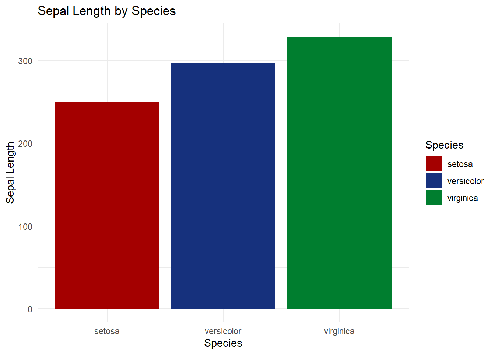

6 R可视化教程-R语言配色教程
第98期 R语言教程 科研绘图配色常用R包
在r语言，ggplot2绘图过程中最重要的一部分就是配色的选择。优秀的配色要充分考虑到颜色的区分度，期刊要求，冷暖特点等
本期介绍如何调整r语言中的配色，使整个图片美观优雅
6.1 基础工作
6.1.1 加载数据
## Sepal.Length Sepal.Width Petal.Length Petal.Width Species
## 1 5.1 3.5 1.4 0.2 setosa
## 2 4.9 3.0 1.4 0.2 setosa
## 3 4.7 3.2 1.3 0.2 setosa
## 4 4.6 3.1 1.5 0.2 setosa
## 5 5.0 3.6 1.4 0.2 setosa
## 6 5.4 3.9 1.7 0.4 setosa
## 7 4.6 3.4 1.4 0.3 setosa
## 8 5.0 3.4 1.5 0.2 setosa
## 9 4.4 2.9 1.4 0.2 setosa
## 10 4.9 3.1 1.5 0.1 setosa
6.2 使用RColorBrewer包设置颜色
6.2.1 Rcolorbrew介绍
CRAN库:CRAN: Package RColorBrewer (r-project.org)
调用网站https://colorbrewer2.org/上的配色方案,使用人数众多,整体比较中规中矩

6.3 使用ggsci包设置颜色
6.3.1 R包介绍
ggsci包含期刊或软件的经典配色,投稿时调用快,效果好,顺手就用上了我用该包配色最多
CRAN库:CRAN: Package ggsci (r-project.org)
教程:Scientific Journal and Sci-Fi Themed Color Palettes for ggplot2 (r-project.org)
6.3.2 配色方案
| Name | Scales | Palette Types | Palette Generator |
|---|---|---|---|
| NPG | scale_color_npg() scale_fill_npg() |
"nrc" |
pal_npg() |
| AAAS | scale_color_aaas() scale_fill_aaas() |
"default" |
pal_aaas() |
| NEJM | scale_color_nejm() scale_fill_nejm() |
"default" |
pal_nejm() |
| Lancet | scale_color_lancet() scale_fill_lancet() |
"lanonc" |
pal_lancet() |
| JAMA | scale_color_jama() scale_fill_jama() |
"default" |
pal_jama() |
| BMJ | scale_color_bmj() scale_fill_bmj() |
"default" |
pal_bmj() |
| JCO | scale_color_jco() scale_fill_jco() |
"default" |
pal_jco() |
| UCSCGB | scale_color_ucscgb() scale_fill_ucscgb() |
"default" |
pal_ucscgb() |
| D3 | scale_color_d3()``scale_fill_d3() |
"category10" "category20" "category20b" "category20c" |
pal_d3() |
| Observable | scale_color_observable() scale_fill_observable() |
"observable10" |
pal_observable() |
| LocusZoom | scale_color_locuszoom() scale_fill_locuszoom() |
"default" |
pal_locuszoom() |
| IGV | scale_color_igv() scale_fill_igv() |
"default"``"alternating" |
pal_igv() |
| COSMIC | scale_color_cosmic() scale_fill_cosmic() |
"hallmarks_light"``"hallmarks_dark"``"signature_substitutions" |
pal_cosmic() |
| UChicago | scale_color_uchicago() scale_fill_uchicago() |
"default"``"light"``"dark" |
pal_uchicago() |
| Star Trek | scale_color_startrek() scale_fill_startrek() |
"uniform" |
pal_startrek() |
| Tron Legacy | scale_color_tron() scale_fill_tron() |
"legacy" |
pal_tron() |
| Futurama | scale_color_futurama() scale_fill_futurama() |
"planetexpress" |
pal_futurama() |
| Rick and Morty | scale_color_rickandmorty() scale_fill_rickandmorty() |
"schwifty" |
pal_rickandmorty() |
| The Simpsons | scale_color_simpsons() scale_fill_simpsons() |
"springfield" |
pal_simpsons() |
| Flat UI | scale_color_flatui() scale_fill_flatui() |
"default" "flattastic" "aussie" |
pal_flatui() |
| Frontiers | scale_color_frontiers() scale_fill_frontiers() |
"default" |
pal_frontiers() |
| GSEA | scale_color_gsea() scale_fill_gsea() |
"default" |
pal_gsea() |
| Bootstrap 5 | scale_color_bs5() scale_fill_bs5() |
"blue" "indigo"``"purple" "pink"``"red" "orange"``"yellow" "green"``"teal" "cyan"``"gray" |
pal_bs5() |
| Material Design | scale_color_material() scale_fill_material() |
"red" "pink"``"purple" "deep-purple"``"indigo" "blue"``"light-blue" "cyan"``"teal" "green"``"light-green" "lime"``"yellow" "amber"``"orange" "deep-orange"``"brown" "grey"``"blue-grey" |
pal_material() |
| Tailwind CSS | scale_color_tw3() scale_fill_tw3() |
"slate" "gray"``"zinc" "neutral"``"stone" "red"``"orange" "amber"``"yellow" "lime"``"green" "emerald"``"teal" "cyan"``"sky" "blue"``"indigo" "violet"``"purple" "fuchsia"``"pink" "rose" |
pal_tw3() |

6.4 其它实用r包
6.4.1 viridis: Colorblind-Friendly Color Maps for R
6.4.1.1 介绍
官方仓库:CRAN: Package viridis (r-project.org)
教程:Introduction to the viridis color maps (r-project.org)
多用于连续渐变色


6.4.2 使用MetBrewer包设置颜色
6.4.2.2 查看配色盘，选择3颜色，区分色
ggplot(iris, aes(x = Species, y = Sepal.Length, fill = Species)) +
geom_bar(stat = "identity") +
labs(title = "Sepal Length by Species", x = "Species", y = "Sepal Length") +
theme_minimal()+
scale_fill_manual(values = met.brewer("Austria"))
ggplot(iris, aes(x = Species, y = Sepal.Length, fill = Species)) +
geom_bar(stat = "identity") +
labs(title = "Sepal Length by Species", x = "Species", y = "Sepal Length") +
theme_minimal()+
scale_fill_manual(values = met.brewer("Degas"))
最后看看好看